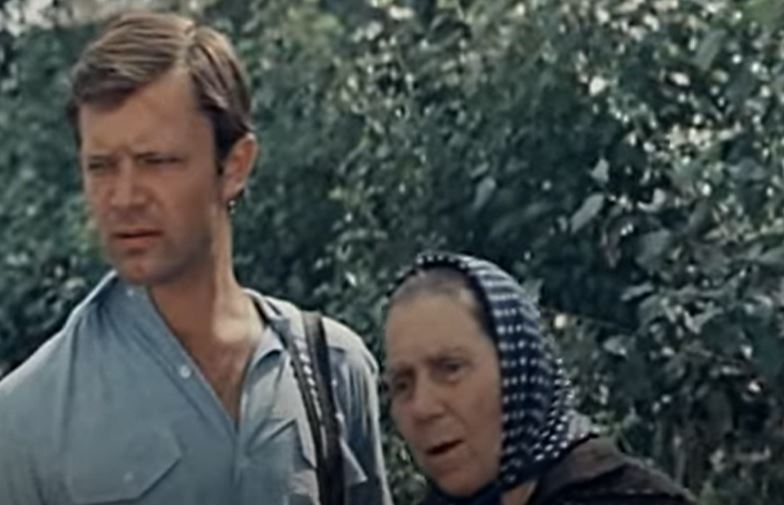
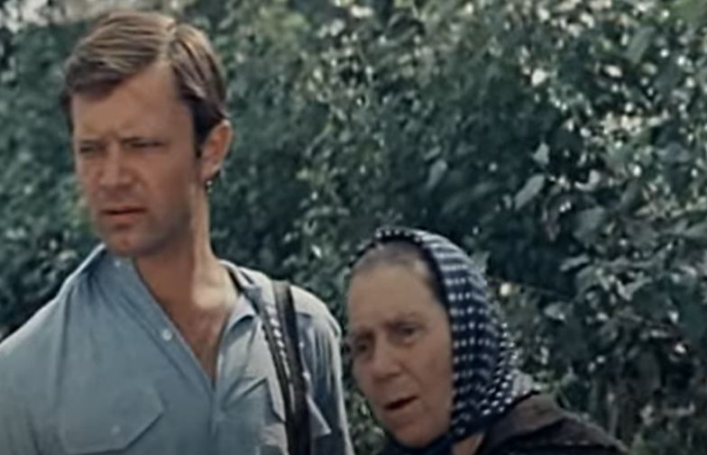

У фильме обнаружено: Явы, Ижи и другие ссср мотоиклы.

У фильме обнаружено: Ява-350/638, кросовые Чезет(CZ).
 

У фильме обнаружено: Восход 3 или 3м.
Так же БМВ кто не увидил то обращайтесь к
@original3.0